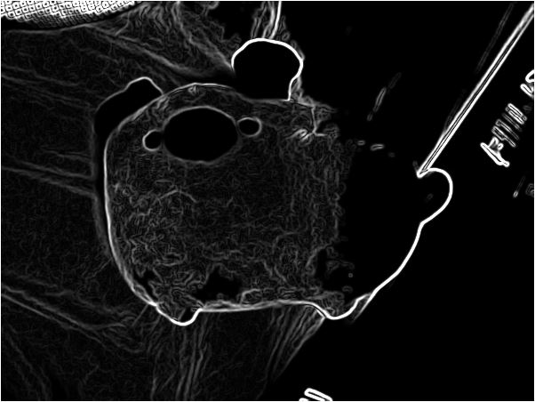
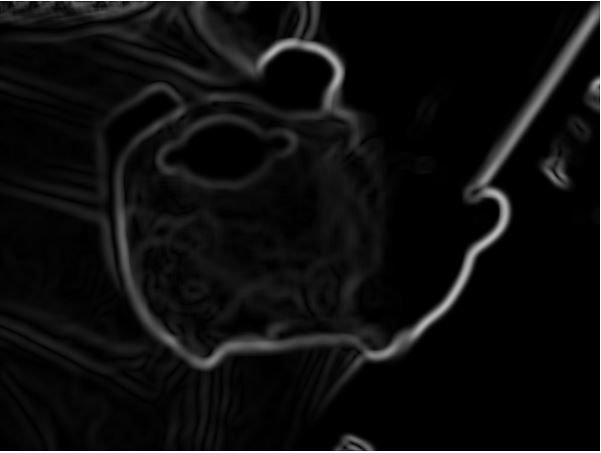
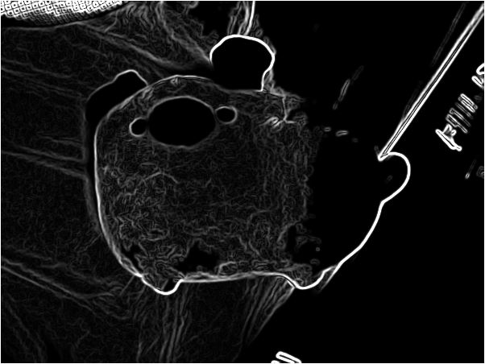
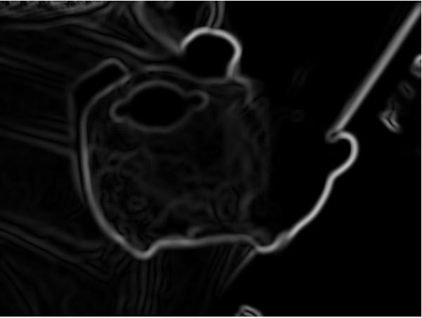
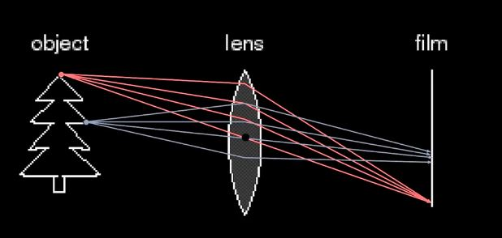
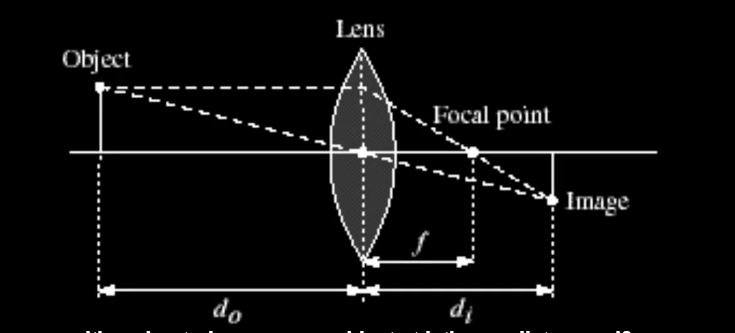

Computer Vision
Notes adapted from Georgia Tech Computer Vision course on Udacity. Link to course: Gatech Computer Vision Udacity
Computer vision is a computer extracting information about a given image. To do this, the computer sees each image as a function of position vs. intensity (for monochrome photos). Because we can represent an image as a function, we can apply an operator to an image to change it. This operator is also known as a filter.
Filters
One such filter is called the linear filter(a.k.a convolution or cross-correlation). It takes a kernel (a.k.a. mask or filter) that replaces a pixel by a linear sum of the neighbors. For example: \[ \begin{array}{|c|c|c|} \hline 1 & 2 & 3 \\ \hline 4 & 5 & 6 \\ \hline 7 & 8 & 9 \\ \hline \end{array} * \begin{array}{|c|c|c|} \hline 0.1 & 0.1 & 0.1 \\ \hline 0.1 & 2 & 0.1 \\ \hline 0.1 & 0.1 & 0.1 \\ \hline \end{array} = \begin{array}{|c|c|c|} \hline 0 & 0 & 0 \\ \hline 0 & 14 & 0 \\ \hline 0 & 0 & 0 \\ \hline \end{array} \] As shown, the filter that is used here increases the intensity of the image, and the resulting image shows up darker. Another common blurring filter is shown below: \[ \frac{1}{9} * \begin{array}{|c|c|c|} \hline 1 & 1 & 1 \\ \hline 1 & 1 & 1 \\ \hline 1 & 1 & 1 \\ \hline \end{array} \] This is a smoothing filter, as it takes the average of all the neighboring pixels and decreased the change of intensity between pixels. There is also a sharpening filter, represented below: \[ \begin{array}{|c|c|c|} \hline 0 & 0 & 0 \\ \hline 0 & 2 & 0 \\ \hline 0 & 0 & 0 \\ \hline \end{array} - \frac{1}{9} * \begin{array}{|c|c|c|} \hline 1 & 1 & 1 \\ \hline 1 & 1 & 1 \\ \hline 1 & 1 & 1 \\ \hline \end{array} \] Mathematically, if the given image is represented as \(F[i,j]\), the new image is \(G[i,j]\), and the kernel of size \(2k+1\) by \(2k+1\) is \(H[u,v]\), the process of cross-correlation is: $$G[i,j] = \sum_{u=-k}^{k} \sum_{v=-k}^{k} H[u,v]F[i+u,j+v]$$ which is expressed more simply as $$G = H\bigotimes F$$ Using the same terms, the expression of convolution is: $$G[i,j] = \sum_{u=-k}^{k} \sum_{v=-k}^{k} H[u,v]F[i-u,j-v]$$ which is expressed more simply as $$G = H\ast F$$Thus, we can notice that correlation and convolution are related by flipping the filter horizontally and vertically (same as rotating 180 degrees). Another famous blurring filter is the smoothing caused by the Gaussian filter (convolution with the following Gaussian function): $$h(u,v) = \frac{1}{2\pi\sigma^2}e^{-\frac{u^2 + v^2}{\sigma^2}}$$ By increasing the \(\sigma\) in the kernel, we are able to make the image more blurry. This takes away more specific details, which will be important in the next section.
Edge Detection
Next, we can use these operators to manipulate the image and show edges. There are many operators, but the most common are the Sobel, Prewitt, or Robert. These are all considered gradient based as we look for the change between neighboring pixels horizontally or vertically. The gradient is represented as: $$\nabla f = [\frac{\partial f}{\partial x},\frac{\partial f}{\partial y}]$$ Using this, we can find the direction and magnitude of maximum change (which most likely represents an edge). However, noise can easily disrupt an image, as a "salt and pepper" noise has a lot of change from black to white. Thus, we can first apply filter to the frequencies(which an image is made up of), and then take the partial derivative. But, because convolution is linear, we can just apply the partial derivative of the filter on the frequencies, and we will get the same result. From the resulting transformations, we look at the peaks in the manipulated frequencies and those are the edges.
One very important and widespread edge detector is the canny operator. It uses the aforementioned Gaussian filter, finds the direction and magnitude of the gradient, uses non-maximum supression, and combines the edges using linking and thresholding. Non-maximum supression is used to shrink the thicker edges. Linking and thresholding is the process of using strong and weak edges. The weak edges that match up with the identified strong edges are the edges that are returned. By changing the \(\sigma\) levels of the Gaussian filter, we can decide the if finer edges show up or not. A larger \(\sigma\) would mean the fine edges are removed and only the prominent edges remain. A demonstration is shown below of an image I took a my stuffed animal.
  
 
As seen, the leftmost photo is the original. We make the image monochrome (black and white) and we achieve the middle left image. We then apply a canny operator with \(\sigma = 1\) on the monochrome image to achieve the middle right photo. We also apply a canny operator with \(\sigma = 5\) on the monochrome image to achieve the rightmost image. We notice that as the sigma increases, the finer edges tend to be removed or blurred out, which is what the gaussian filter does. A substitution for the derivative of the Gaussian filter is known as the Sobel operator, shown below: \[ S_x = \frac{1}{8} * \begin{array}{|c|c|c|} \hline -1 & 0 & 1 \\ \hline -2 & 0 & 2 \\ \hline -1 & 0 & 1 \\ \hline \end{array} \qquad S_y = \frac{1}{8} * \begin{array}{|c|c|c|} \hline 1 & 2 & 1 \\ \hline 0 & 0 & 0 \\ \hline -1 & -2 & -1 \\ \hline \end{array} \] These left \(S_x\) above is the sobel operator in the x direction. The right \(S_y\) above is the sobel operator in the y direction (going upwards). We also note that the \(\frac{1}{8}\) is not there for the real sobel operator, but is there for the approximation of the Gaussian.
Identification
Now that we have edges, we can use them to identify things in a picture - the most obvious being a line. However, we note that the edges that we find are not always perfect. If we zoom in on the edges, some of them are incomplete or even not on the same perfect line. To counter this, we use the hough transform. The main idea is that each pixel will vote for compatible lines, and in the end, the computer looks for lines with a lot of votes. These become the "found" lines. Evidently, this idea is not always perfect depending on how the edges were detected. If the \(\sigma\) was too small, then extraneous line may show up. If the \(\sigma\) was too large, then some lines many not show up. This is why choosing \(\sigma\) is very important.
The first step to doing this hough transform is converting the image into a hough space. We note that $$y = mx + b \rightarrow b = (-x)m + y \qquad \text{ OR }\qquad x\cos{\theta} - y\sin{\theta} = d$$ Thus, a point in the image corresponds to either a line or a sinusoid in hough space. We then draw these lines or sinusoids. For each bin that the line or sinusoid passes through, we add one to the respective hough accumulator array. In the end, the bins with the most "votes" become lines. We note that this also applies to circles. However, circles change sizes and we need to accomodate for that. We do this by simply iterating through the possible vertices and voting for bins that the possible circles go through. For identifying larger objects, we can use feature detection that finds smaller properties and combine these to find the larger objects. For example, if we wanted to identify a car, we could look two for its wheels. Based on the positioning of the wheels, we could determine where the car is.
Fourier's Magic
This section will be dedicated to Jean Baptiste Joseph Fourier for his wack ideas that benefit our lives today. Fourier had an idea, which turned out to be true, that any periodic function, in this case frequencies, could be represented by a weighted sum of sins and cosines. By extending on this idea, we have the Fourier Transform where functions in the spatial domain are mapped to a frequency domain. So the goal is to get super close to the actual function represented in the spatial domain using sinusoids, which is quite impossible finitely. Thus, we use an infinite number of weighted sinuoids and represent the Fourier Transform as: $$F(u) = \int_{-\infty}^{\infty} f(x)e^{-i2\pi ux} \,dx$$ Two quick side notes; \(e^{ik} = \cos{k} + i\sin{k}\) and the inverse of the Fourier Transform is represented as: $$f(x) = \int_{-\infty}^{\infty} F(u)e^{i2\pi ux} \,du$$ BUT, we do not have continuous signals, meaning that this would technically not be accurate or possible. So to counter that, we use the Discrete Fourier Transform. Instead of being continuous function, we take samples from a certain cycle and use these to do the transformation. Thus, we have the equation: $$F(k) = \frac{1}{N}\sum_{x=0}^{N-1}f(x)e^{-i2\pi kx/N}$$ where \(k\) represents the number of cycles per period of the signal. This also works for 2D where the fucntions are changed to: $$\text{Continuous: } F(u,v) = \frac{1}{2} \int_{-\infty}^{\infty} \int_{-\infty}^{\infty} f(x)e^{-i2\pi (ux + vy)} \,dx \,dy$$ $$\text{Discrete: } F(k_x, k_y) = \frac{1}{N} \sum_{x = 0}^{N - 1} \sum_{y = 0}^{N - 1} f(x,y)e^{-i2\pi (k_xx+k_yy)/N}$$ Now that we have these functions, we can relate the Spacial Domain and the Frequency Domain. \[ \begin{array}{|c|c|c|} \hline & Spacial \quad Domain (x) & Frequency \quad Domain (u) \\ \hline Linearity & c_1f(x) + c_2g(x) & c_1F(u) + c_2G(u) \\ \hline Convolution & f(x) * g(x) & F(u)G(u) \\ \hline Scaling & f(ax) & \frac{1}{|a|}F(\frac{u}{a}) \\ \hline Differentiation & \frac{d^nf(x)}{dx^n} & (i2\pi u)^nF(u)\\ \hline \end{array} \] However, the world is not perfect and the samples that we take may not capture an accurate representation of the signals. This can happen when the frequencies are too high. For example, if you look at a car tire on the highway, it may be rotating forward so quickly that certain shadows of it make the wheel look like it's moving backwards. This is called aliasing, when different signals become indistinguishable or hidden. To ensure that aliasing doesn't ruin everything, we use low pass anti-aliasing filters, take more samples, or take out the extreme peak signals to make it "less wiggly". So more on these anti-aliasing filters. We use something called a comb function (basically an impulse train). The equation is as follows: $$1D: comb_M[x] = \sum_{k = -\infty}^{\infty} \delta [x-kM]$$ $$2D: comb_{M,N}(x,y) = \sum_{k = -\infty}^{\infty} \sum_{i = -\infty}^{\infty} \delta [x-kM, y-iN]$$ We note that because of the scaling from the spacial domain to the frequency domain, if we decrease the impulses by half, then the frequency increases by double. Thus, we have achieved both taking more samples and taking out the more extreme peaks.
Cameras :)
So most of us know what a camera is, but the inner functions are much more intricate. But the first question that we ask is: what does a camera do? The obvious answer is that it takes a photo, and we have defined a photo to be a 2D function of intensity values. However, the new definition that we work with makes much more intuitive sense: mapping 3D points using light to a 2D projection.
The first type of camera that we learn about is the pinhole camera (which is the worst version). If we didn't have the pinhole, and everything was directly exposed to the film, you would be able to see nothing. Each point in 3D projects infinitly onto the 2D film. However, with the pinhole, we are able to limit this so that only certain places are projected on. So if we were to imagine this, pretend my object is a bar going from (0,0) to (0,2). The pinhole is located at (1,1). Then this pinhole projects onto a wall, x = 2, the same bar reversed. So, (0,0) goes to (2,2) and (0,2) goes to (2,0). In this case, the focal length is 1 (pinhole directly to wall). We also define a new term, aperture, which means the size of the pinhole, because that affects the blurriness of the returned image.
However, this is not the ancient times and we don't need pinhole cameras and 8 plus hours of exposure to take one photo. We use lenses instead with digital cameras. The lenses are shown as follows:
So, we note that the lense is trying to make sure that all the rays of light are projected onto the same point. However, the lense cannot be perfect for all points. In the image, the point labelled by the red is directly very perfectly, but we note that the blue will be out of focus (the points that the rays hit form a "circle of confusion").
To look more deeply into this issue, we will first consider thin lenses:
We will now introduce a formula that applies to these lenses: $$\frac{1}{f} = \frac{1}{d_0} + \frac{1}{d_1}$$